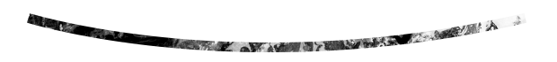
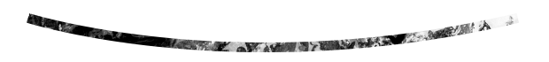

Hola, estamos contentos que pueda conocernos aún más y esperamos ser de gran ayuda para usted y su familia. Somos una comunidad cristiana que se fundamenta y vive en la identidad recibidad de Dios como sus hijos, que responden de forma voluntaria y apasionada al amor y la gracia recibida, por medio de su servicio, estableciendo el Reino de Dios en su entorno.


"Por tanto, id y haced discípulos a todas las naciones, bautizandolos en el nombre del Padre, y el Hijo, y del Espíritu Santo; enseñandoles que guarden todas las cosas que os he mandado; y he aquí yo estoy con vosotros todos los días, hasta el fin del mundo. Amén" Mateo 28: 19-20
"Ser una iglesia de excelencia, que crece de manera integral, que influte en todas las esferas sociales de Heredia, Costa Rica y más allá; y que da apoyo a otros ministerios para la gloria de Dios"
"Hacemos de cada miembro un discípulo de Jesucristo que a la vez se multiplica en otros"

Familia: es una de nuestras prioridades, el poder crecer, desarrollar, fortalecer e incentivar la vida en familia, ya que en ella está la evidencia más clara del diseño de Dios y su propósito. Hechos 3:25
Integridad: La transparencia y el fidedigno es algo que buscamos y deseamos tener todos y cada uno denuestros días, en todo lo que hacemos. No importa el precio, circunstancia alguna o lo difícil que parezca, laintegridad es algo a lo que hemos sido llamados. 2 Timoteo 2:15
Innovación: Ser y buscar la excelencia en todas las áreas que como comunidad podemos tener y esto nos lleva a renovarnos, sin cambiar los principios bíblicos que nos han mantenido a lo largo de todos estos años. Queremos dar a conocer el amor de Dios y su Reino siempre de forma relevante y oportuna al mundo actual 1 Corintios 9:20-23
Familia: es una de nuestras prioridades, el poder crecer, desarrollar, fortalecer e incentivar la vida en familia, ya que en ella está la evidencia más clara del diseño de Dios y su propósito. Hechos 3:25
Integridad: La transparencia y el fidedigno es algo que buscamos y deseamos tener todos y cada uno denuestros días, en todo lo que hacemos. No importa el precio, circunstancia alguna o lo difícil que parezca, laintegridad es algo a lo que hemos sido llamados. 2 Timoteo 2:15